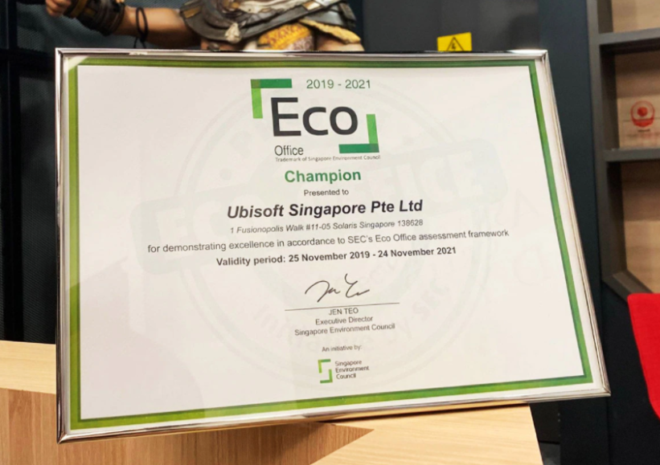
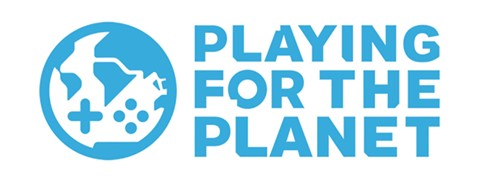

Pour être plus efficace dans la lutte pour l’environnement,
Ubisoft a décidé de sensibiliser son équipe à travers un comité écologique et des campagnes de sensibilisation,
mais aussi ses filiales en mettant en place des mesures pour contrôler l’efficacité énergétique de leur bâtiments et
infrastructure ainsi qu’en utilisant des moyens de transports écologiques et en réduisant la quantité de déchets.
D’ailleurs, la société aussi eux l’écocertification d’Ubisoft Singapour,
c’est-à-dire qu’ils ont travaillé avec le Conseil environnemental de Singapour pour obtenir une certification de bureau écologique.

Ubisoft est aussi devenue partenaire de l’initiative « Playing for the Planet » qui est organisée par le programme environnemental des Nations Unies,
c’est pour dire son importance, aussi dans un but de sensibiliser l’industrie du jeu vidéo.
